湛江美食
湛江的餐桌，宛如海鲜展台，不花俏、不做作，白灼是湛江海鲜的最高境界。
另一方面，湛江小吃，却又穷尽心思、时间、经验，方得一小口的满足。
湛江白切鸡 一只鸡最幸福的事，就是被湛江人白切。
- 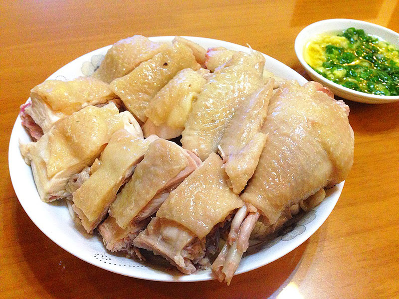
- 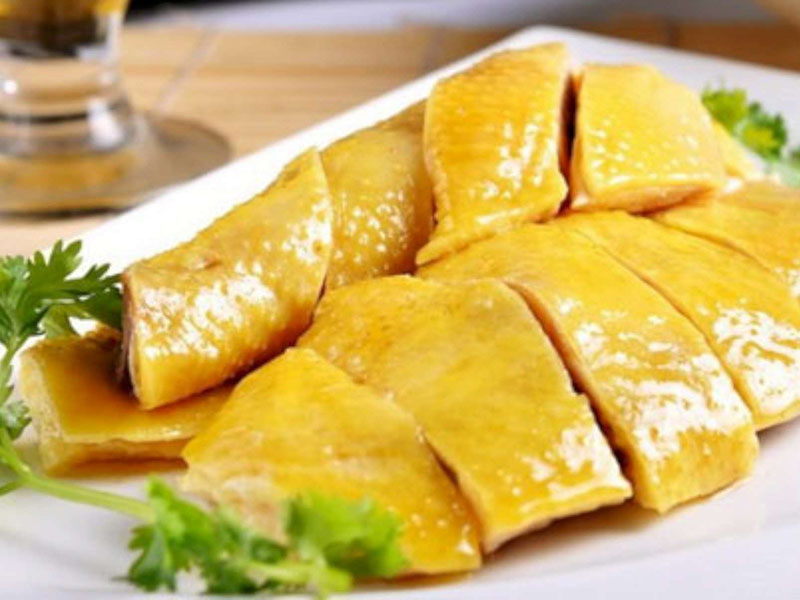
- 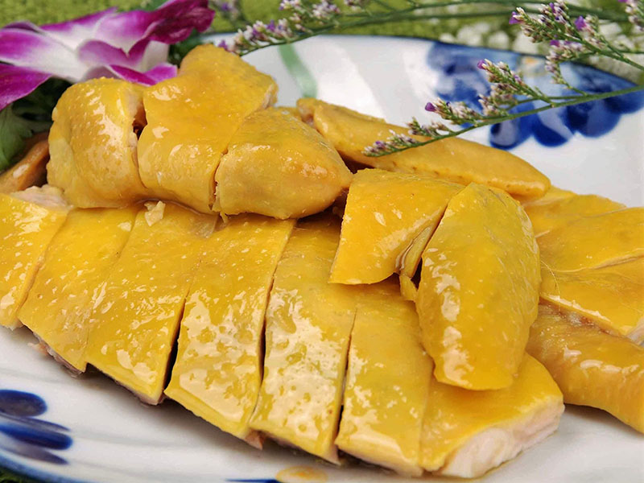
- 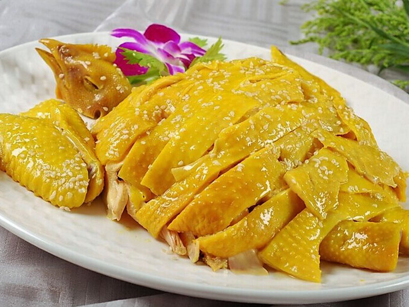
- 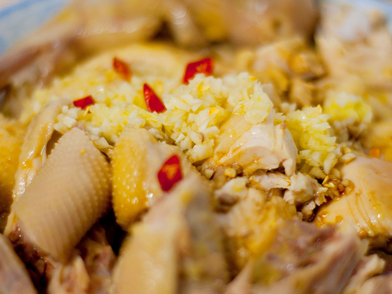
懂鸡，才能懂广东人。
炸鸡这种东西，太经不起琢磨，太经不起品尝，太不尊重食材了，嘴刁的湛江人恐怕会持保留意见。 一只小鸡破壳而出，从叽叽喳喳到咯咯咯咯，成长不易，一朝赴死，却只是裹上面糊，扔到油锅，变成炸鸡…… 试问，这怎么对得住鸡？湛江人民不答应！
湛江人吃鸡，讲的是“礼数”
中国是美食大国，又是礼仪之邦，尊重鸡的办法比较多，比如白切、汤煮、泥裹、清蒸、宫爆、焖炖等等。 大江南北的厨师为了让鸡走得体面，他们绞尽脑汁地把鸡的生命价值发挥到极致， 琢磨出广东白切鸡、江苏贵妃鸡、新疆大盘鸡、贵州辣子鸡、海南文昌鸡、香港鸡煲翅、四川宫保鸡丁、东北小鸡炖蘑菇等名食来。
一只降生在中国的鸡，自有一番广阔天地。中国的吃鸡史大概有七八千年，可能是世界上最早养鸡的国家，这是从古人吃剩的鸡骨架中估摸出来的。甲骨文中亦有“鸡”字，为“鸟”旁加“奚”的形声字。 中国还是红原鸡主要分布地，2004年多国科学家公布了红原鸡的基因组图谱，达尔文提出的家鸡源于红原鸡已被证实。
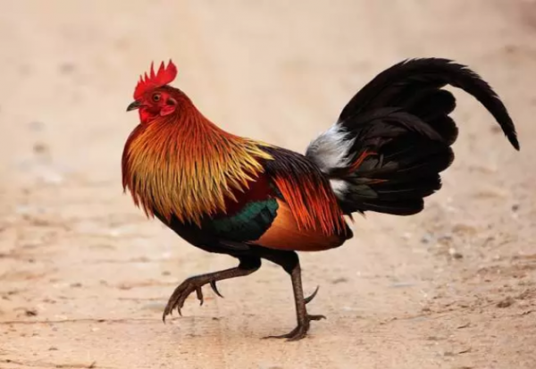中国人爱吃鸡，也跟鸡的吉祥寓意有关。在中国古代的创始神话中，鸡比人还早出现，是女娲娘娘第一天就用泥捏出来的动物。而“鸡鸣天晓”“闻鸡起舞”“雄鸡夺冠”等说法，更有光明和生机的象征。如今人们过年必吃鸡，便是从魏晋南北朝形成的新年食俗中延续下来的——古人过年喜欢讨吉利。
而这种吃鸡的消费心理，被更为讲究的广东人继承下来，并发扬光大。不仅过年过节要吃鸡，平时也离不开鸡，因此有了“无鸡不成宴”的俗语，可见鸡在广东的地位非同一般。
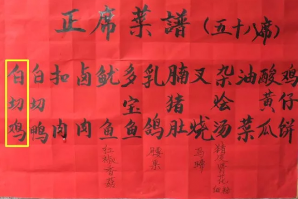席上有鸡，才算菜式完美。嘴刁的湛江人，对鸡的品种尤其挑剔，多选用品质比较优良的本地品种。
这些品种的共同特点是体型小，生长慢，繁殖率低，饲养时间长，因此肉质特佳，最适合“白切”，能够尽显鸡肉本身的原汁原味。那种45天催肥促成的白羽鸡？拜托，它们只配扔到油锅里炸得它妈都认不出来。
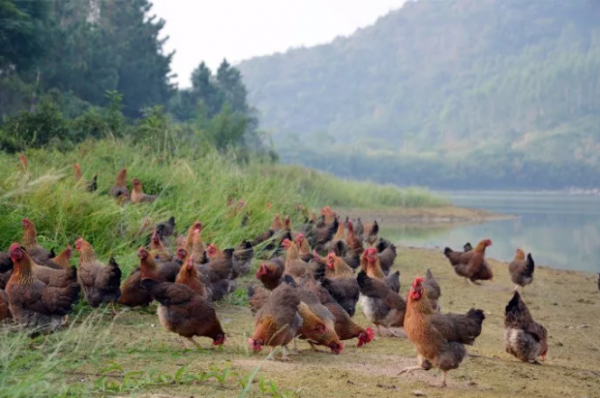至于鸡的吃法，更是数不胜数。光是广州特别著名的招牌鸡，就有东江饭店的盐焗鸡、大同酒家的脆皮鸡，北园酒家的花雕鸡、广州酒家的文昌鸡、泮溪酒家的园林香液鸡、周生记的太爷鸡、清平饭店的清平鸡、九记的路边鸡……
不知道吃哪一家？没关系，你随便找一家饭店点一道白切鸡，出品都不会差。毕竟在广东开粤菜馆，如果连鸡都做不好，也就没有资格混下去了。
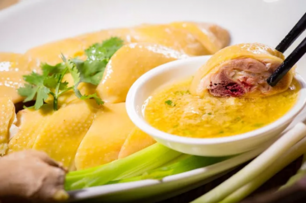至于大广东地区，几乎每个地方都拥有一道威震一方的名鸡，譬如佛山的柱候鸡、湛江的衣记鸡、潮州的豆酱鸡、惠州的泥窑鸡、湛江的白切鸡、化州的香油鸡……除了鸡肉皮薄肉滑，酱料的味道更是地方一绝，仿佛秘不外传，在外地绝难吃到同样的味道。
从广深地区驾车几小时到偏远的粤北粤西，眼巴巴地就为了吃一碟鸡，实在是再正常不过的事。

粤菜最名贵的是鸡，不是什么鲍参翅肚
湛江人真的是用生命在爱鸡。如果说从前对鸡的饲养已经是高标准、严要求，那么“特种鸡”的出现简直让人惊叹他们无穷无尽的鸡种追求，以及别出心裁的饲养创意。
在百万葵园里面长大的“葵花鸡”、吃虫吃草天然喂养的“虫草鸡”、吃名贵药材长大的“檀香鸡”、吃玉米长大的“玉米鸡”……这些鸡在山清水秀的地方放养，喝泉水，听音乐，享受自然的幸福生活，过得简直比人还舒适。崇尚健康养生的广东人相信，爱鸡才是爱生命，鸡的幸福就是人的幸福。
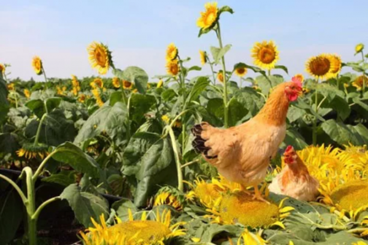在物质生活越来越富足的今天，鸡已不是一种珍稀食材。那么，这些用生命养出来的鸡，就成为了另一种食尚奢侈。
在传统的粤式大菜中，香港人喜爱的意头菜“凤吞翅”可以说是老派奢侈。这个既名贵又豪华的汤菜，曾经在高级食桌上红极一时。凤即为鸡，现多以俗语“鸡煲翅”称呼，常用于戏谑“豪搓一顿”。不过，所有豪奢的“鲍参翅肚”，如果没有“凤”的衬托，恐怕都要大为失色，甚至让名贵食材失了价值。
原因在于，鲍参翅肚要有滋有味，全靠高汤来煨。而高汤，以往通常指鸡汤，经过长时间熬煮后，汤水留下用于烹制其他菜肴，目的正是为了提鲜。这个鸡汤，才是灵魂之所在。
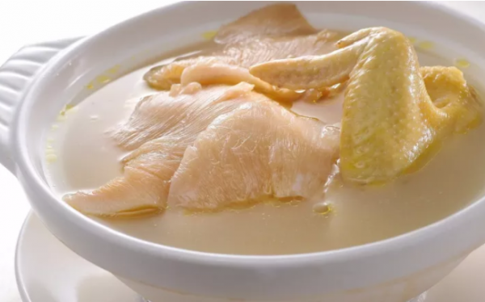所以说，名贵的是鸡，而不是翅。凤吞翅固然矜贵，但若无“凤”的点睛之笔，什么高级“翅”都没有用。因此鱼翅是可以被取代的，随着人们的环保意识的提高，鱼翅也会渐渐退出餐桌，然后广东人民再用其他食材来搭配，继续有滋有味地吃鸡。
不必配什么高级食材，就是街头最普通的材料，湛江人就能把鸡做出高级感。如“四宝元肚鸡”，用的是竹丝鸡，也就是乌鸡，在广东又称之为“白凤”。先将全糯米、红枣和莲子放入鸡肚内，再将整只白凤用猪肚裹住，置入高汤中煨至软熟。取出后，破开猪肚和鸡肚，里面的三宝已经成了美味的焗饭，而平时吃起来比较“柴”的竹丝鸡也吸收了三宝的甜香、猪肚的嫩滑，绝对会让你吃到“舐舐脷”。
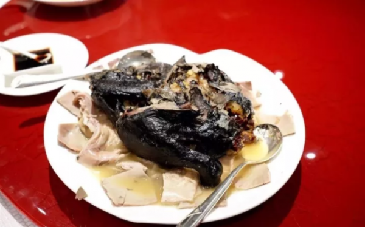喜欢养生的湛江人，自然也不会忘了在鸡汤里放一点中草药。著名的“黄酒凤吞鸽”就是用黄酒和中药炖制的，据说这道菜源自传说中的“曹操鸡”，是曹阿瞒用来治头痛的。
炖汤前，要先将几颗鸽子蛋放到鸽子肚里，然后整只鸽子放到鸡肚里，再把整只鸡放入黄酒和清水配置的汤中，加入天麻、桂皮、茴香制成的中药包，炖上几个钟头。最后上菜时，鸡汤散发着中药的清香，鸡肚破开后还有鸽子，鸽腹里面还有鸽子蛋，味道鲜美，层次丰富，不吃到最后势不罢休。
所以说，嘴刁的湛江人民不会亏待任何一只鸡。从风雨棚大排档到CBD高级食府，鸡都是当之无愧的招牌菜，平等地被各阶层的人享用。
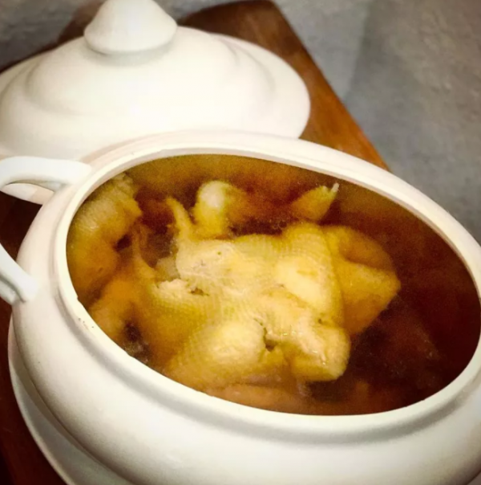懂鸡，才能懂广东人
鸡不仅是粤菜的灵魂，更是理解广东人的一把钥匙。
广东饮食对鸡的挑剔讲究，其实是一种对食物的尊重。而广东方言的“鸡文化”，也集合了广东人诙谐幽默之大成，嬉笑怒骂里尽是对生活的热爱。
在粤语俚语中，“鸡”无疑是存在感最强的动物，用处极为广泛：有一种幸运，叫“执死鸡”；有一错失，叫“走鸡”；有一种忙乱，叫“腾鸡”；有一种好处，叫“捞鸡”；有一种懒惰，叫“偷鸡”；有一种看走眼，叫“发鸡盲”；有一种指挥大局，叫“吹鸡”；有一种蹭吃蹭喝，叫“菠萝鸡”；有一种窘境，叫“落汤鸡”……
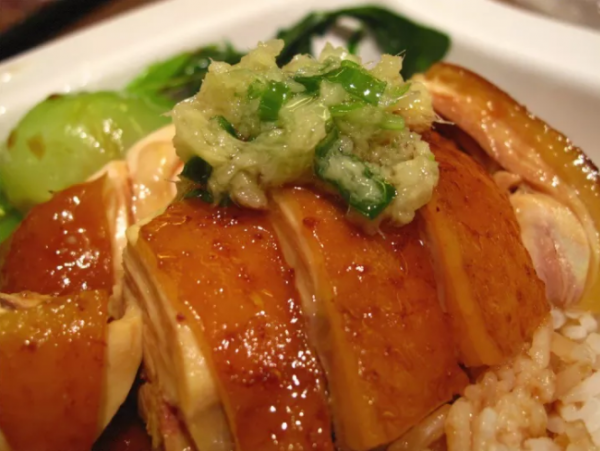“鸡文化”俚语的市井谐趣，并没有炫耀或耻笑的意味，顺境也好，逆境也罢，笑一笑，称赞而不揶揄，自嘲而不菲薄，是一种平等自矜的幽默。
还有两种相似的“鸡”，用来形容广东人可谓再贴切不过了——有一种环境叫“静静鸡”，有一种行动叫“静鸡鸡”。
学者叶曙明曾经在《其实你不懂广东人》谈到广东人的沉默，替广东人被人排斥却还要担着排外的恶名而鸣不平。其实，讷于言而敏于行，向来是广东人的特点。南方以南，在这么一个“静静鸡”的地方偏安一隅，向来不耽误广东人“静鸡鸡”地搞事情。
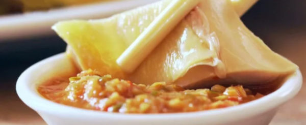你有你的，我有我的，方向。说得再多，还是行动最实际。
有那时间打嘴仗，不如好好地做事，努力地赚钱，美美地吃鸡。